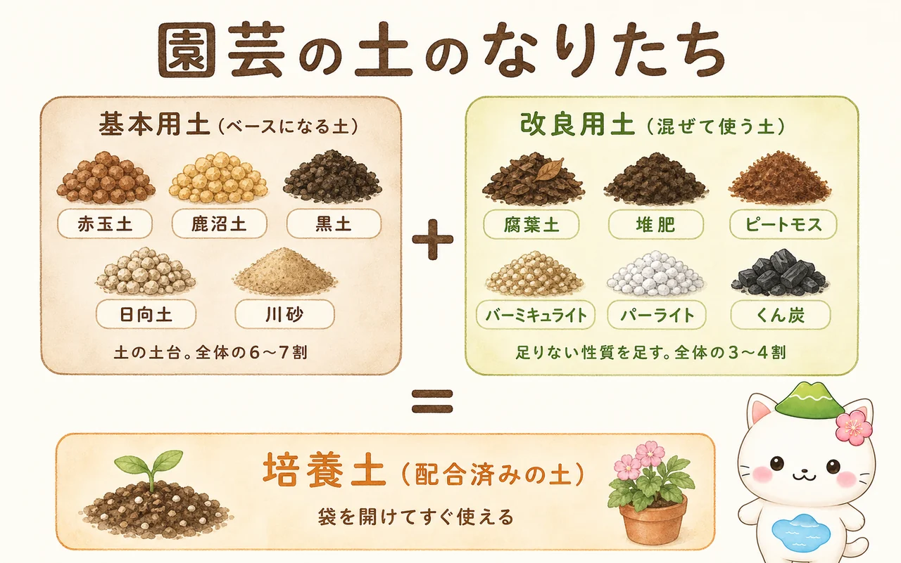
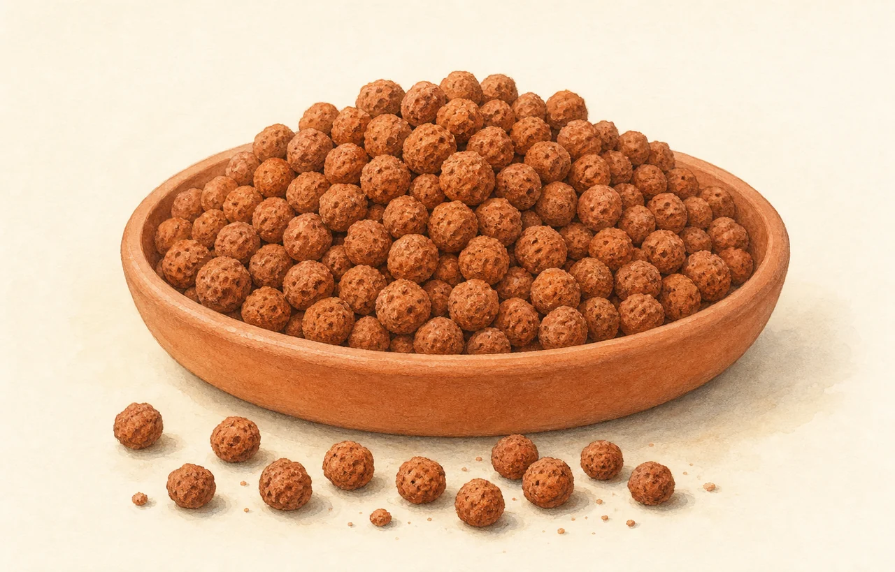
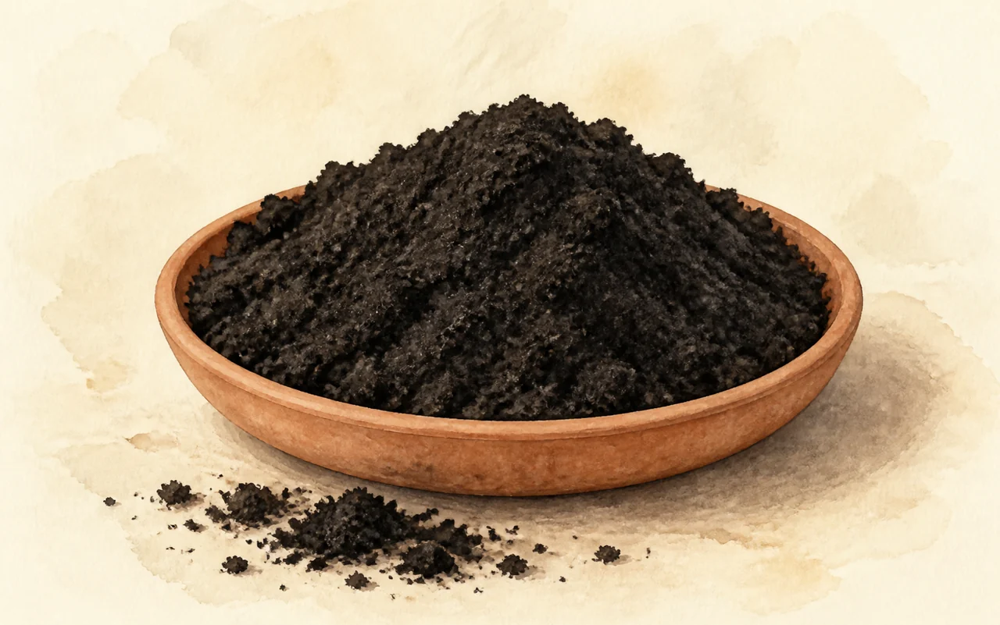
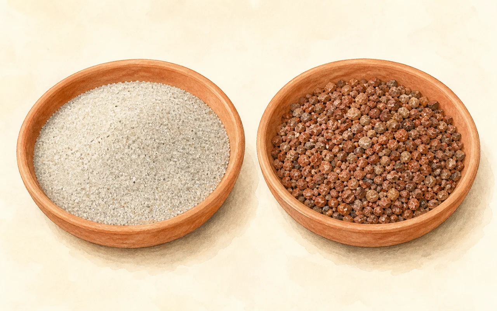
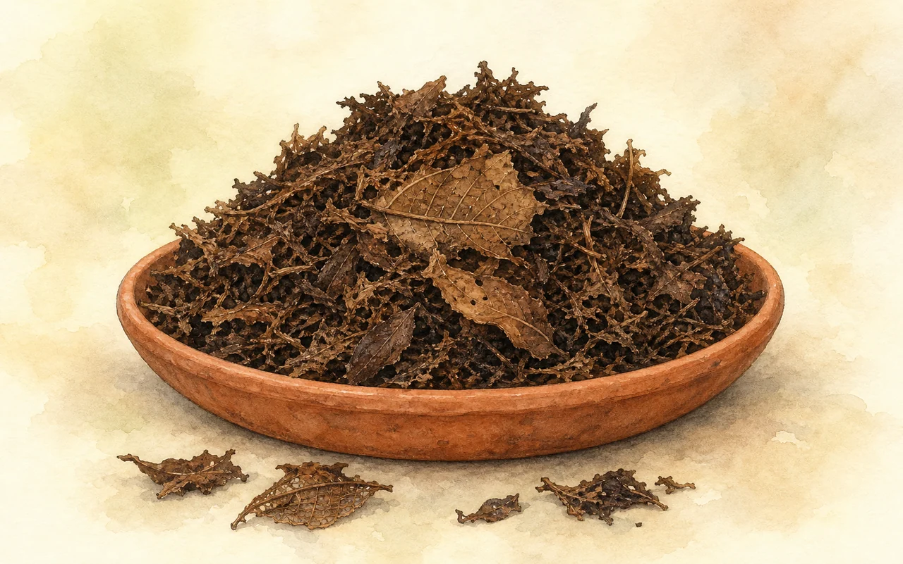
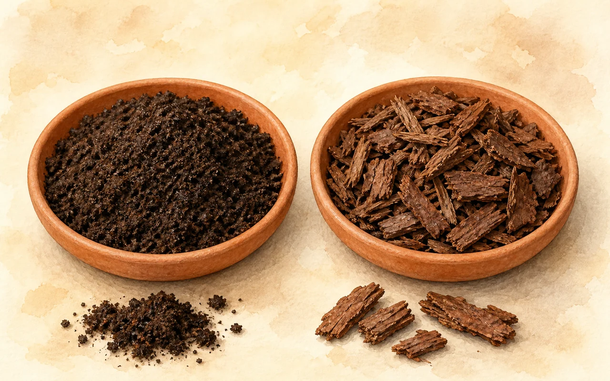
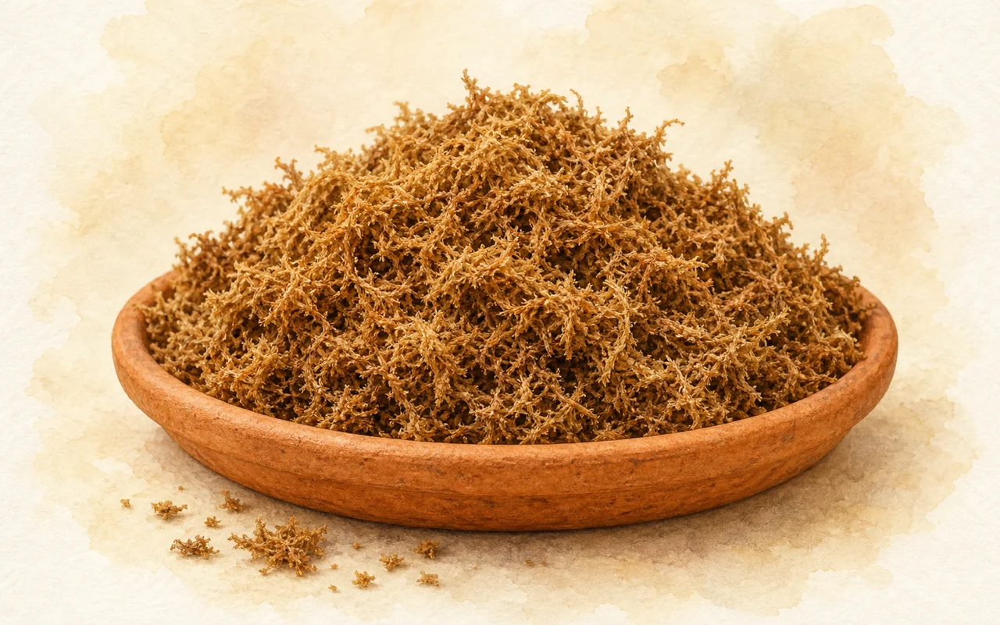
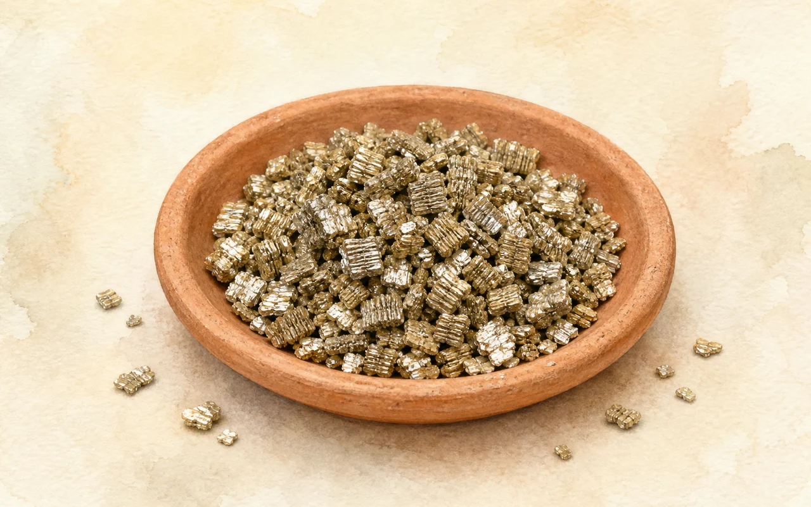
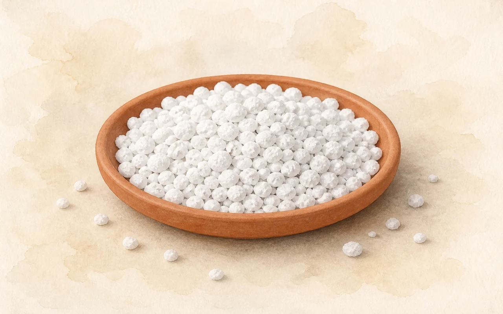
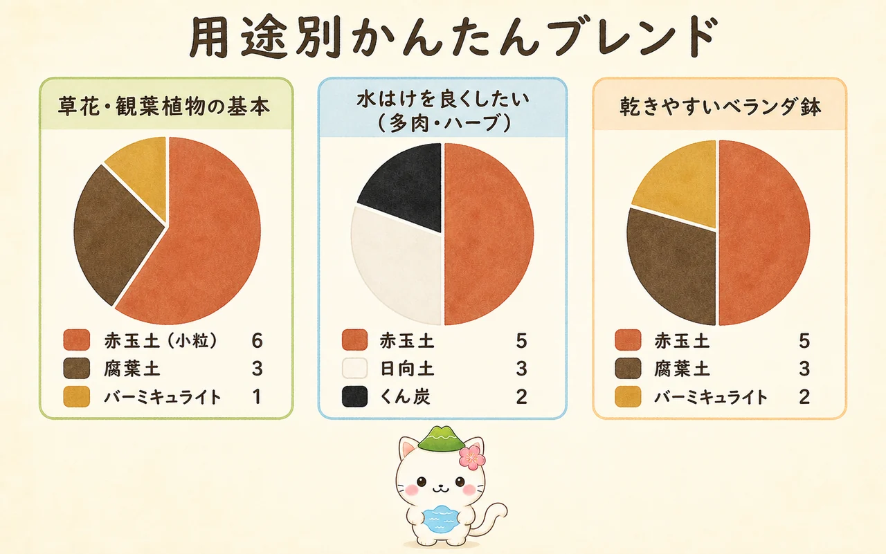

園芸用土の種類と選び方
ホームセンターの園芸コーナーに並ぶ、たくさんの土の袋。赤い粒、白い粒、黒い土、ふかふかの落ち葉——どれを買えばいいのか、名前を見てもさっぱりわからない。でも、じつは「土台になる土」と「性質を足す土」の2種類しかありません。この2つの組み合わせ方さえわかれば、売り場の袋はぜんぶ読めるようになります。ここでは代表的な12種類を、それぞれの正体・得意なこと・苦手なこと・使いどころで整理しました。

- 水はけ（排水性）：余分な水がすっと抜ける。根は水につかりっぱなしだと呼吸できず腐ります。
- 水もち（保水性）：それでいて、必要な水は抱えておける。矛盾するようですが、粒のある土なら両立します。
- 通気性と保肥力：根も呼吸しています。粒のすき間に空気が入り、粒の表面が肥料をつかまえておいてくれる状態が理想です。
この3つを1種類で完璧に満たす土はありません。だから混ぜて使うのです。土台になる「基本用土」に、足りない性質を「改良用土」で足していく——それが土づくりのすべてです。

🟤 基本用土（土台になる土）
配合の5〜7割を占める、土のベース。ほとんどが火山灰や軽石が由来で、栄養はほぼ含みません。栄養より「粒の構造」を担当する土だと思ってください。

赤玉土
迷ったらこれ。水はけ・水もち・通気性のバランスが最もよい、園芸用土の主役。

鹿沼土
黄白色の軽い粒。酸性が強く、ツツジ・ブルーベリー向き。乾くと白くなり水やりの目安になる。

黒土
栄養と保水力は豊か。でも粒がなく水はけが悪いので、単体では使わない畑用の土。

日向土（ボラ土）
崩れない硬い軽石。水はけを上げたいときの切り札。多肉・サボテン・洋ランに。

川砂・桐生砂
水はけを一気に良くする砂。挿し木や盆栽・山野草に。海砂は塩分があるので使えません。
🍂 改良用土（混ぜて性質を足す土）
配合の3〜4割。基本用土に足りない「ふかふかさ」「保水力」「微生物のすみか」を補います。有機質のもの（腐葉土・堆肥・ピートモス）と、無機質のもの（バーミキュライト・パーライト・くん炭）に分かれます。

腐葉土
落ち葉が分解したもの。改良用土の王道で、土をふかふかにし微生物を呼ぶ。

堆肥（牛ふん・バーク）
腐葉土より栄養寄り。畑や花壇の土づくりの定番。必ず「完熟」を選ぶ。

ピートモス
ミズゴケの泥炭。抜群の保水力と強い酸性。「酸度調整済み」かどうかが最重要。

バーミキュライト
きらきら光る無菌の人工土。保水力と保肥力を足す。種まき・挿し木にも単体で使える。

パーライト
真っ白で超軽量。水はけと通気性を足す。重い土を軽くしたいベランダの味方。

もみがらくん炭
もみ殻の炭。通気性を上げ、酸性に傾いた土をやわらげる。入れるのは1割まで。
🛍 配合済みの土
🧪 用途別・かんたんブレンド
自分で配合するなら、覚えるのは「赤玉土7・腐葉土3」のひとつだけで十分です。これが多くの植物に合う基本形。ここから、育てる場所と植物に合わせて少しずらしていきます。

| こんなとき | 配合 | ねらい |
|---|---|---|
| まず基本 | 赤玉土（小粒）7 ＋ 腐葉土 3 | 多くの草花・庭木に合う黄金比。迷ったらこれ。 |
| 草花・観葉植物 | 赤玉土 6 ＋ 腐葉土 3 ＋ バーミキュライト 1 | 保水力と保肥力を少し足して、水切れをやわらげる。 |
| ベランダ・乾きやすい鉢 | 赤玉土 5 ＋ 腐葉土 3 ＋ バーミキュライト 2 | 風が強く乾きやすい環境で、水もちを厚くする。 |
| 多肉・サボテン・ハーブ | 赤玉土 5 ＋ 日向土 3 ＋ くん炭 2 | とにかく水はけ最優先。有機質を減らして蒸れを防ぐ。 |
| ブルーベリー・ツツジ | 鹿沼土 5 ＋ ピートモス（酸度未調整）5 | 酸性を好む植物のために、あえて酸性に保つ。 |
| 種まき・挿し木 | バーミキュライト 単体、または赤玉土（小粒）5 ＋ バーミキュライト 5 | 無菌・無肥料で雑菌と肥料やけを避ける。 |

数字は「だいたい」で大丈夫。きっちり量る必要はなくて、スコップ何杯ぶんで考えればいいの。それより大事なのは粒をつぶさないこと。ぎゅうぎゅう押し固めたり、乱暴にかき混ぜたりすると、せっかくの粒が壊れて水はけの悪い泥になっちゃうよ。
🌵 用途別の「専用土」について
売り場には「野菜の土」「観葉植物の土」「多肉植物・サボテンの土」「ブルーベリーの土」「バラの土」「種まき用土」などの専用土も並んでいます。これらは培養土の配合を、その植物向けに振ったものです。中身の考え方は上の表と同じで、たとえば多肉用は日向土や軽石が多く有機質が少なめ、ブルーベリー用はピートモスが多く酸性寄り、種まき用は無菌・無肥料——という具合です。
1種類しか育てないなら専用土がいちばん確実です。いろいろ育てるなら、培養土をひと袋と、赤玉土・腐葉土・パーライトを少しずつ持っておくと、たいていの調整ができます。
♻️ 使い終わった土はどうする？
- ふるいにかけて根や枯れ葉、崩れた微塵（みじん）を取り除く。
- 夏なら黒いビニール袋に入れて日なたで1〜2週間の天日消毒。病原菌や害虫の卵を減らせます。
- 新しい赤玉土と腐葉土を3割ほど足して、粒と有機質を補う。
- 元肥を入れ直してから使う。
- 病気が出た株の土は再生しない。土の中に病原菌が残ります。
- 土は自治体のごみとして出せないことがほとんど。捨てる前に必ず確認を。
- ホームセンターの引き取りサービスや、園芸店の回収を利用する手も。
- 公園や河川敷など、自分の土地以外に撒くのはNG。